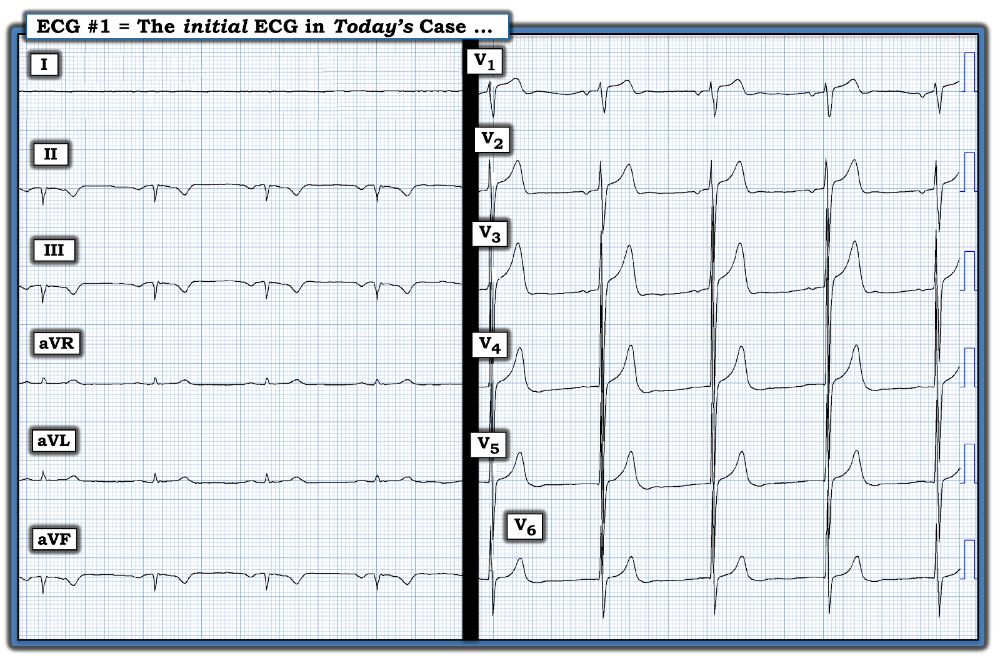
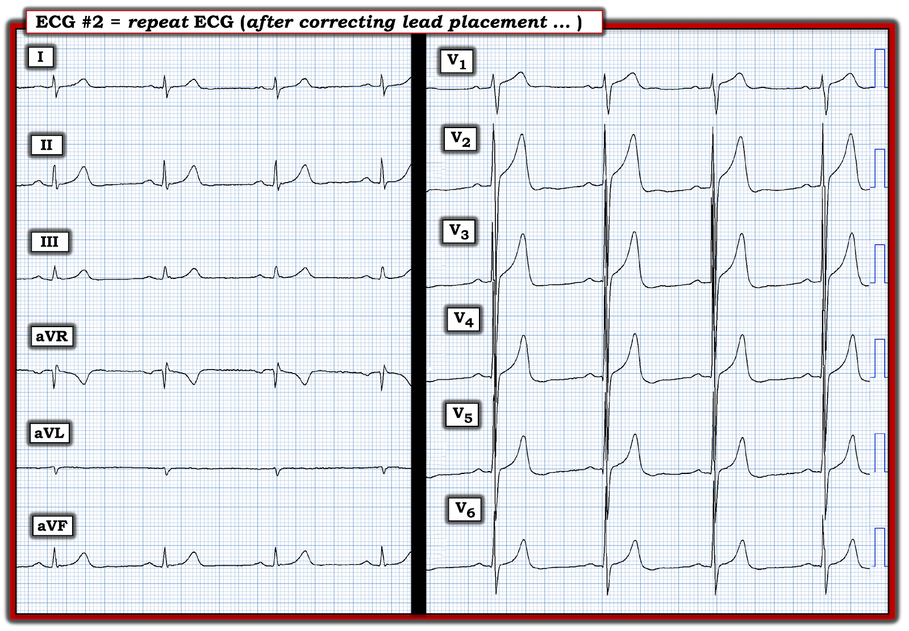
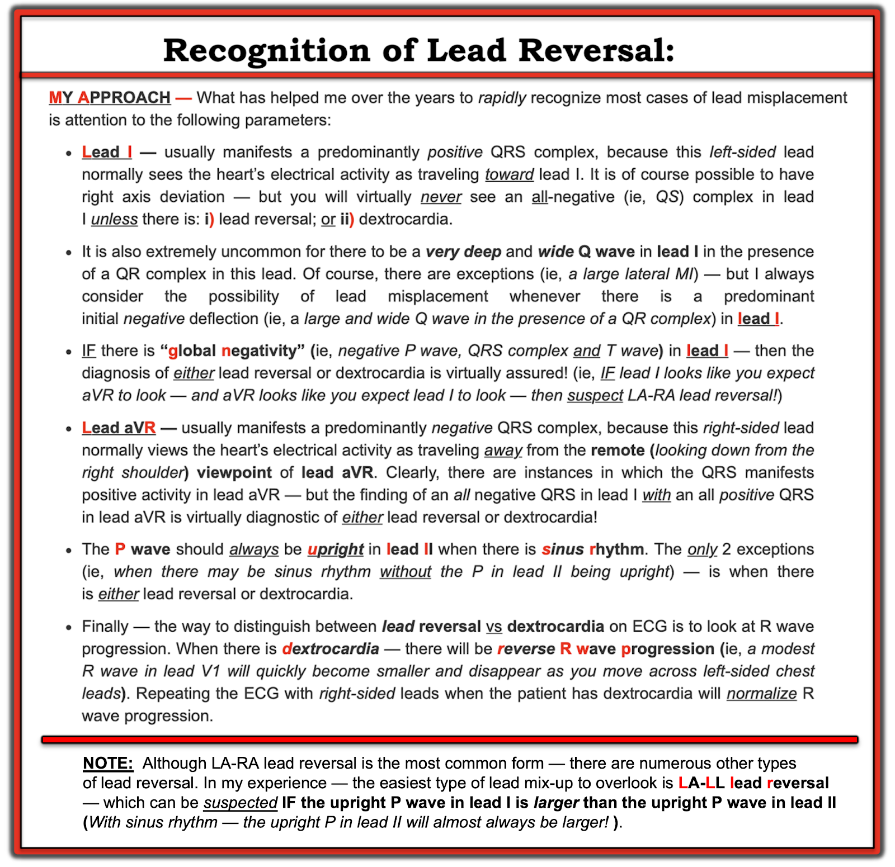
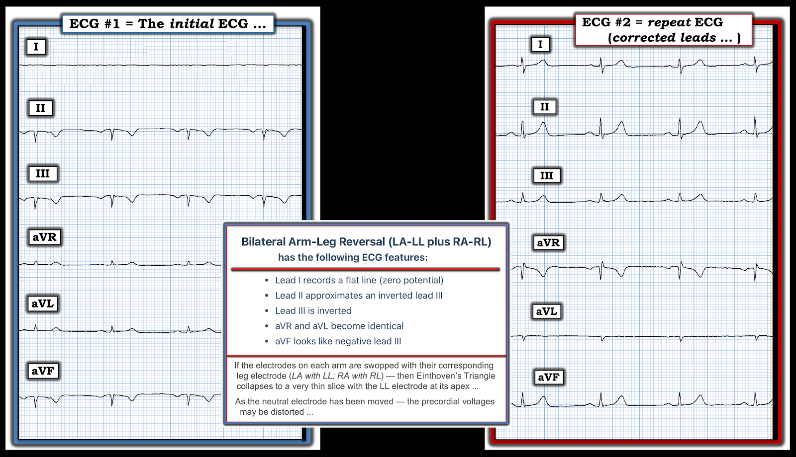

ECG Blog #396 — Vì sao lại có đường phẳng?
Điện tâm đồ ở Hình 1 — được ghi từ một người đàn ông trung niên bị hồi hộp đánh trống ngực và khó thở. Bệnh nhân ổn định huyết động tại thời điểm ghi bản ghi này.
- BẠN sẽ đọc điện tâm đồ ở Hình 1 như thế nào?
- Có bằng chứng của một nhồi máu cơ tim cấp mới xảy ra hoặc đang diễn ra không?
- Bạn có thể làm gì trước tiên?


ĐIỂM THEN CHỐT (PEARL) #1: Vì bệnh nhân hôm nay ổn định huyết động — ít nhất bạn cũng có một “khoảnh khắc” để cân nhắc tình huống kỹ hơn trước khi phải đưa ra các quyết định xử trí.
- Điểm MẤU CHỐT: Tuy đúng là bệnh nhân mắc bệnh phổi nặng, lâu năm có thể biểu hiện phức bộ QRST ở chuyển đạo chuẩn I với biên độ QRST giảm rõ rệt nói chung (Xem ECG Blog #65 — về dấu hiệu Schamroth) — bình thường bạn không bao giờ được thấy một đường phẳng hoàn toàn ở bất kỳ chuyển đạo chi chuẩn nào. NẾU có lúc nào bạn thấy một đường phẳng hoàn toàn ở chuyển đạo I, chuyển đạo II hay chuyển đạo III — gần như chắc chắn đã có một kiểu đặt sai vị trí điện cực nào đó. Hãy ghi lại điện tâm đồ!
ĐIỂM THEN CHỐT (PEARL) #2: ĐÚNG VẬY — tôi có thấy hình ảnh trông giống một nhồi máu thành dưới lớn, cấp hoặc đã tái tưới máu (phức bộ QS và sóng T đảo ngược sâu ở các chuyển đạo II,III,aVF) — nhưng vì bệnh nhân này ổn định và gần như chắc chắn có một kiểu đảo điện cực nào đó (Xem PEARL #1) — tôi sẽ ghi lại điện tâm đồ sau khi kiểm tra vị trí đặt điện cực để xem những thay đổi điện tâm đồ nào có thể là thật.
- Cũng lưu ý rằng sóng P âm ở chuyển đạo II chuẩn trong Hình 1 (cũng như ở các chuyển đạo III và aVF, là 2 chuyển đạo thành dưới còn lại). Nên nhớ rằng NẾU sóng P ở chuyển đạo II âm — thì theo định nghĩa — Bạn không có nhịp xoang (trừ khi có đặt sai vị trí điện cực hoặc tim sang phải).
- Một lần nữa, vì bệnh nhân hôm nay ổn định huyết động — không có gì khẩn cấp. Kiểm tra vị trí đặt điện cực. — Rồi ghi lại điện tâm đồ.
===============================
CA BỆNH TIẾP DIỄN:
Bác sĩ điều trị đã nhận ra ngay khả năng có một kiểu đặt sai vị trí điện cực nào đó. Vì vậy — anh ấy đã lập tức ghi lại điện tâm đồ sau khi kiểm tra vị trí đặt điện cực.
- Bạn sẽ đọc điện tâm đồ ghi lại ở Hình 2 như thế nào?
- Đã có KIỂU đảo điện cực nào ở điện tâm đồ #1?


DIỄN GIẢI CỦA TÔI về điện tâm đồ #2:
Điện tâm đồ ghi lại ở Hình 2 — có vẻ đạt yêu cầu về kỹ thuật. Nhịp là nhịp chậm xoang với tần số hơi trên 50/phút. Mọi khoảng (PR,QRS,QTc) đều bình thường. Trục mặt phẳng trán bình thường, ở +70 độ.
- Tuy khó đo (vì QRS chồng lấn nhiều ở nhiều chuyển đạo trước tim) — biên độ QRS có vẻ tăng rất nhiều, phù hợp với tiêu chuẩn điện thế của LVH.
- Tăng tiến sóng R có lẽ bình thường (một lần nữa — khó đánh giá do QRS chồng lấn nhiều ở nhiều chuyển đạo trước tim). Dù vậy — sóng R đã cao bất thường ngay từ chuyển đạo V2 (cao ~15 mm).
- Sóng T nhọn rõ ở nhiều chuyển đạo — kèm ST chênh lên 1-2 mm dốc lên từ từ ở các chuyển đạo V1 đến V4. Không có ST chênh xuống soi gương.
- Điểm MẤU CHỐT: Khi mọi điện cực đã được đặt đúng vị trí ở điện tâm đồ #2 — sóng P âm ở các chuyển đạo thành dưới biến mất (và khi đó thấy được sóng P dương bình thường ở chuyển đạo II của nhịp xoang) — và các sóng QS kèm sóng T đảo ngược sâu ở các chuyển đạo thành dưới cũng biến mất.
- Nhận định: Ở người đàn ông trung niên này bị hồi hộp đánh trống ngực và khó thở, nhưng không đau ngực — tôi nghĩ sóng T nhọn và ST chênh lên nhẹ, dốc lên ở các chuyển đạo trước tim là một biến thể tái cực. Nhất là khi sóng R cao bất thường ngay từ V2, cùng biên độ QRS ở các chuyển đạo trước tim tăng rất nhiều và chồng lấn nhau — tôi không nghĩ bất kỳ dấu hiệu nào trong số này là biểu hiện của một quá trình cấp tính. Do biên độ QRS tăng — tôi sẽ thiên về làm siêu âm tim.
- Diễn tiến: Đánh giá thêm không phát hiện điều gì cấp tính.
Điều gì xảy ra khi Đảo Điện cực?
Tài liệu tham khảo “tra cứu nhanh” trực tuyến mà tôi ưa thích về các kiểu đặt sai vị trí điện cực thường gặp nhất là của LITFL ( = Life-In-The-Fast-Lane). Tôi đã dùng trang web tuyệt vời mà họ đăng trên website của họ về chủ đề này trong nhiều năm. Trang này DỄ tìm — Chỉ cần gõ “LITFL Lead Reversal” vào thanh tìm kiếm — và đường link hiện ra ngay lập tức.
- Trang web LITFL này mô tả 7 kiểu đảo điện cực thường gặp nhất. Còn có các khả năng khác (tức là trường hợp có thể đặt sai vị trí nhiều điện cực) — nhưng các trường hợp này ít gặp hơn và khó dự đoán hơn.
- Cho đến nay (!) — kiểu đảo điện cực thường gặp nhất là nhầm lẫn giữa điện cực LA (Left Arm — tay trái) và RA (Right Arm — tay phải). Kiểu đảo điện cực này thường DỄ phát hiện — vì nó thường tạo ra hình ảnh âm toàn bộ của sóng P, QRS và sóng T ở chuyển đạo I — điều mà bình thường hầu như không bao giờ gặp (Xem ECG Blog #264 — để biết một ví dụ về đảo điện cực LA-RA).
- Ngược lại — lại DỄ bỏ sót kiểu đặt sai vị trí điện cực có lẽ thường gặp thứ 2, đó là đảo LA-LL. Lý do là hình ảnh điện tâm đồ khi đảo LA-LL không lập tức nổi bật lên như một điều “bất thường” về mặt sinh lý (Xem Hình 3 — trong đó tôi tóm tắt các điểm MẤU CHỐT giúp tôi nhiều nhất để nhận ra đảo điện cực — kèm ĐƯỜNG LINK trong phần Tài liệu tham khảo bên dưới tới hơn 15 bài Blog minh hoạ nhiều kiểu đặt sai vị trí điện cực khác nhau).


Còn kiểu Đảo Điện cực trong Ca Hôm nay thì sao?
Sự cố kỹ thuật trong ca hôm nay khác biệt so với các ví dụ trong những bài Blog khác mà tôi đã đăng — ở chỗ có đảo tay-chân hai bên (LA-LL cộng RA-RL — với các đặc điểm được tóm tắt ở Hình 4).
- Lưu ý từng dấu hiệu bất thường ở điện tâm đồ #1 — đều được sửa lại ở điện tâm đồ #2 sau khi đặt điện cực đúng vị trí.
- Lưu ý một lần nữa rằng MẤU CHỐT giúp nhận ra ngay sự cố kỹ thuật này — là thấy đường phẳng ở chuyển đạo I.


==========================================
Lời cảm ơn: Xin cảm ơn H.S. Cho = 조현석 (từ Seoul, Hàn Quốc) đã cung cấp ca bệnh và bản ghi này.
==========================================

==================================
Các bài ECG Blog Liên quan đến Ca hôm nay:
- ECG Blog #205 — Ôn lại Cách tiếp cận hệ thống của tôi khi đọc điện tâm đồ 12 chuyển đạo.
- ECG Blog #185 — Ôn lại Cách tiếp cận Ps, Qs, 3R để đọc nhịp một cách hệ thống.
- ECG Blog #264 — Ôn lại Đảo Điện cực Chi (tức là đảo điện cực LA-RA ở một bệnh nhân nhồi máu cơ tim cấp). Xin xem thêm PHẦN BỔ SUNG ngày 29/7/2024 của bài này để thấy thêm một ca đảo LA-RA — đặt sai V1,V2 — và một đường gần như phẳng ở chuyển đạo II).
- ECG Blog #375 — Đảo điện cực LA-LL.
- ECG Blog #396 — Đường phẳng ở chuyển đạo I.
- ECG Blog #462 — Các điện cực bị “lệch” (trục mặt phẳng trán kỳ quặc).
- ECG Blog #463 — Đảo LA-RA.
CÁC Ví dụ Khác về Đảo điện cực (từ Dr. Smith's ECG Blog):
Các lỗi kỹ thuật với nhiều kiểu đảo điện cực khác nhau vẫn là một “sự cố” thường gặp đến bất ngờ trong thực hành hằng ngày. Vì vậy — điều quan trọng là chúng ta cần làm quen với cách tốt nhất để nhận ra các dạng khác nhau của những “sự cố” này. Để ôn lại — Hãy xem Bình luận của tôi — ở cuối trang trong các bài sau đây trên Dr. Smith's ECG Blog:
- Bài ngày 4 tháng 6 năm 2018 (đảo LA-LL).
- Bài ngày 29 tháng 7 năm 2018 (đảo LA-RA).
- Bài ngày 4 tháng 11 năm 2018 (đặt sai V1,V2).
- Bài ngày 11 tháng 2 năm 2020 (đảo LA-RA).
- Bài ngày 18 tháng 3 năm 2020 (đảo LA-RA).
- Bài ngày 28 tháng 7 năm 2020 (đảo RA-LL).
- Bài ngày 28 tháng 8 năm 2020 (đảo LA-LL).
- Bài ngày 19 tháng 11 năm 2020 (đảo LA-LL).
- Bài ngày 27 tháng 11 năm 2021 (đảo LA-RA).
- Bài ngày 17 tháng 4 năm 2022 (đặt sai V1,V2).
- Bài ngày 5 tháng 5 năm 2022 (đảo LA-RA).
- Bài ngày 24 tháng 5 năm 2022 (đảo LA-LL).
- Bài ngày 26 tháng 5 năm 2022 (đảo LA-LL).
- Bài ngày 17 tháng 8 năm 2022 (đảo LA-RA).
- Bài ngày 8 tháng 11 năm 2022 (chuyển đạo V1,V2 + nhiễu do mạch đập (Pulse-Tap)).
- Bài ngày 18 tháng 12 năm 2022 (chuyển đạo V1,V2).
- Bài ngày 13 tháng 5 năm 2023 (đảo LA-RA).
- Bài ngày 30 tháng 5 năm 2023 (đảo LA-RA).
- Bài ngày 6 tháng 1 năm 2024 (đảo RA-LL).
- Bài ngày 25 tháng 6 năm 2024 (đảo LA-LL; V1,V2).
================================
Đường link tới các ví dụ về NHIỄU
Thêm các “sự cố” kỹ thuật khác được dẫn ở đây — một số từ Dr. Smith's ECG Blog — một số từ các nguồn khác (LƯU Ý: Vì trước đây tôi không theo dõi lưu lại các ví dụ này — còn có thêm các ví dụ về nhiễu rải rác trong Dr. Smith's ECG Blog mà tôi chưa đưa vào đây ... ).
- Bài ngày 15 tháng 1 năm 2024 — Tất cả về NHIỄU!
- Bài ngày 18 tháng 2 năm 2024 — Về bộ lọc; PTA.
- Bài ngày 18 tháng 5 năm 2024 — Bộ lọc; nhiễu RA.
- Bài ngày 10 tháng 6 năm 2024 — Kỳ quặc = nhiễu?
- Bài ngày 15 tháng 9 năm 2023 — về PTA (nhiễu do mạch đập – Pulse-Tap Artifact).
- Bài ngày 17 tháng 3 năm 2023 — về PTA.
- Bài ngày 17 tháng 1 năm 2023 — về PTA.
- Bài ngày 21 tháng 10 năm 2022 — về “VT do nhiễu”.
- Bài ngày 10 tháng 11 năm 2020 — về PTA.
- Bài ngày 17 tháng 10 năm 2020 — về một phụ nữ 70 tuổi bị “VT do nhiễu”.
- Bài ngày 27 tháng 9 năm 2019 — về bài báo của Rowlands & Moore với các công thức đã nêu ở trên để nhận ra chi “thủ phạm”.
- Bài ngày 22 tháng 9 năm 2019 — nhiễu ST-T từng lúc.
- Bài ngày 26 tháng 8 năm 2019 — nhiễu đường nền.
- Bài ngày 30 tháng 1 năm 2018 — về PTA.
- Tổng quan ngắn của Tom Bouthillet về một số nguyên nhân thường gặp gây nhiễu.
- Tổng quan thêm về nhiễu điện tâm đồ của Pérez-Riera và cs. (Ann Noninvasic Electrocardiol 23:e12494, 2018)
- Nhiễu giống VT — của Knight và cs.: NEJM 341:1270-1274, 1999.
- ECG Blog #148 — Nhiễu giả VFib.
- ECG Blog #132 — Thêm về nhiễu giống VT-VFib.
- ECG Blog #139 — Nhiễu giả cuồng nhĩ (AFlutter).
- ECG Blog #44 — Run do Parkinson so với cuồng nhĩ (AFlutter).
- ECG Blog #255 — Nhiễu do chân trái.
- ECG Blog #201 — Có nên kích hoạt phòng thông tim (cath lab) không?
- ECG Blog #432 — Không phải PMVT — mà là NHIỄU!